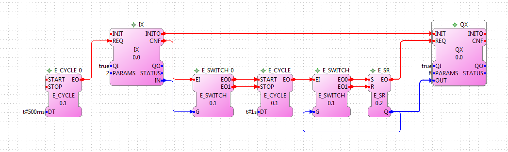

Raspberry Pi is a low-cost embedded system with an ARM processor @700Mhz and 512MB RAM. It supports many operation systems. The most popular OS for the RaspberryPi is the Debian based Raspbian. Furthermore there is an 26 pin header on board for custom I/O. FORTE uses the wiringPi library from http://www.wiringpi.com that is released under the GNU LGPLv3 license. The I/O are connected as follows.
| wiringPi | Name | Header | Name | wiringPi | |
|---|---|---|---|---|---|
| 3.3v | 1 | 2 | 5v | ||
| 8 | SDA | 3 | 4 | 5v | |
| 9 | SCL | 5 | 6 | Gnd | |
| 7 | GPIO7 | 7 | 8 | TxD | 15 |
| Gnd | 9 | 10 | RxD | 16 | |
| 0 | GPIO17 | 11 | 12 | GPIO18 | 1 |
| 2 | GPIO27 | 13 | 14 | Gnd | |
| 3 | GPIO22 | 15 | 16 | GPIO23 | 4 |
| 3v3 | 17 | 18 | GPIO24 | 5 | |
| 12 | GPIO10 | 19 | 20 | Gnd | |
| 13 | GPIO9 | 21 | 22 | GPIO25 | 6 |
| 14 | GPIO11 | 23 | 24 | GPIO8 | 10 |
| Gnd | 25 | 26 | GPIO7 | 11 | |
This tutorial shows how to compile FORTE in a console window. This way, it is not necessary to use the GUI mode on the Raspberry Pi. If you compile FORTE for first the time, you have to configure your RaspberryPi, as described in Preparation. When you recompile FORTE to include new FBs, skip to Building.
The following picture shows an example application from the flipflop tutorial which is extended with IX and QX function blocks. The extended application periodically toggles on RaspberryPi pin number 3. It can be started and stopped via RaspberryPi pin number 13. You can connect an LED to obtain a blinking light.
The "PARAMS" data input in the IX and QX FB define which pin should be used on the RaspberryPi. In this example, the input is taken from pin 2 in wiringPi which is pin number 13 on the RaspberryPi, according the table. The output signal is connected to wiringPi pin 8, which is the physical pin number 3 on the RaspberryPi connector.
The application also contains E_CYCLE and E_SWITCH function blocks (which ar not in the flipflop tutorial). The first one generates an event every 500 ms. This way the IX block will check the hardware input every half second if signal has changed. E_SWITCH_0 starts or stops the action, depending on the "IN" data output of the IX function block.